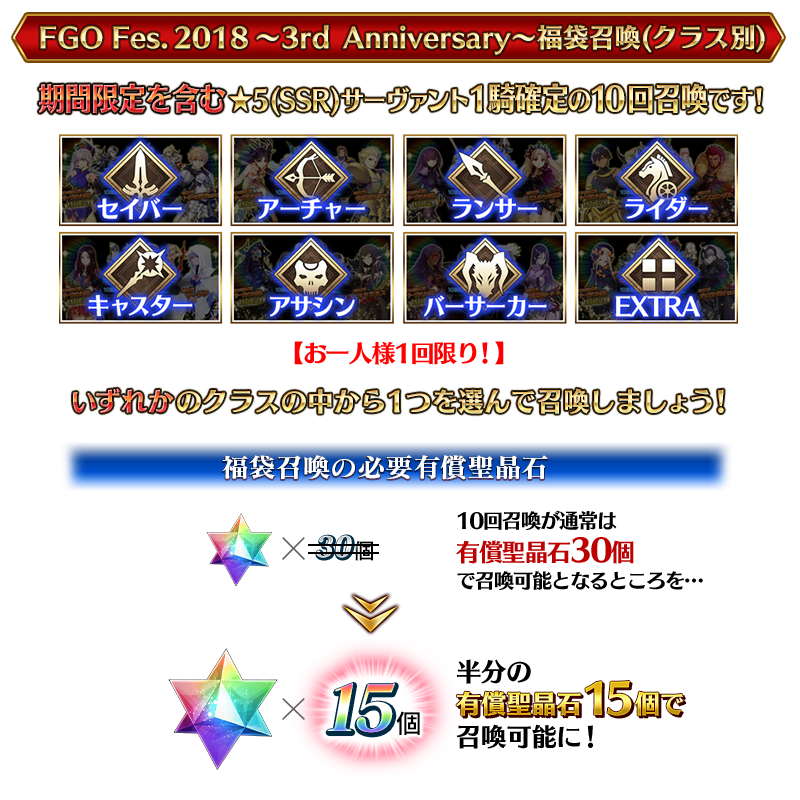

◆「Fate/Grand Order Fes. 2018 ～3rd Anniversary～福袋召喚(分職階)」期間◆
期間:2018年7月29日(日) 15:30～8月12日(日) 11:59
以期間限定舉辦「Fate/Grand Order Fes. 2018 ～3rd Anniversary～福袋召喚(分職階)」！

包含期間限定確定1位★5(SSR)Servant、確定1張★4(SR)以上、確定1位★3(R)以上的Servant！
※★4(SR)以上確定的被抽出對象不僅只有Servant也包含概念禮裝。
「Fate/Grand Order Fes. 2018 ～3rd Anniversary～特異點Pick Up召喚(每日交替)」限定概念禮裝的「★5(SSR)愛と希望の物語」「★4(SR)グレイテスト・ジャーニー」「★3(R)TEAM Phoenix」也登場！
詳情請在聖晶石召喚畫面左下的召喚詳細確認。
◆Servant、概念禮裝相關注意◆
※能用有償聖晶石15個召喚。無法用無償聖晶石召喚。
※聖晶石購入時給予的「附贈(オマケ)」是做為無償聖晶石而不包含在有償聖晶石的個數，請注意別搞錯。還有，所持聖晶石的詳細，可從所持道具一覧確認。
※在召喚對象除了確定1位★5(SSR)Servant，也包含一部份的★4(SR)、★3(R)Servant及概念禮裝。
※請注意★5(SSR)斯卡哈＝斯卡蒂是抽出對象外。
※請注意★4(SR)以下的期間限定Servant是抽出對象外。
※請注意做為被抽出對象的期間限定概念禮裝只限「Fate/Grand Order Fes. 2018 ～3rd Anniversary～特異點Pick Up召喚(每日交替)」限定概念禮裝，其他的期間限定概念禮裝是抽出對象外。
※關於真名尚未判明的Servant，透過主線關卡的進行會讓Servant及一部份寶具的名稱變化。
◆Saber職階召喚對象Servant◆
※關於★4(SR)、★3(R)Servant也只限Saber職階的召喚對象。
| 職階 | 稀有度 | Servant名 |
|---|---|---|
| Saber | ★★★★★ | 亞瑟・潘德拉剛〔Prototype〕 |
| ★★★★★ | 阿提拉 | |
| ★★★★★ | 阿爾托莉亞・潘德拉剛 | |
| ★★★★★ | 沖田總司 | |
| ★★★★★ | 西格魯德 | |
| ★★★★★ | 尼祿・克勞狄烏斯〔Bride〕 | |
| ★★★★★ | 宮本武藏 | |
| ★★★★★ | 莫德雷德 | |
| ★★★★★ | 兩儀式 | |
| ★★★★ | 阿爾托莉亞・潘德拉剛〔Alter〕 | |
| ★★★★ | 高文 | |
| ★★★★ | 齊格飛 | |
| ★★★★ | 夏爾・德翁 | |
| ★★★★ | 鈴鹿御前 | |
| ★★★★ | 尼祿・克勞狄烏斯 | |
| ★★★★ | 柳生但馬守宗矩 | |
| ★★★★ | 羅摩 | |
| ★★★★ | 蘭斯洛特 | |
| ★★★ | 蓋烏斯・尤利烏斯・凱撒 | |
| ★★★ | 吉爾・德・雷 | |
| ★★★ | 弗格斯・馬克・羅伊 | |
| ★★★ | 貝德維爾 |
※福袋召喚期間中，阿爾托莉亞・潘德拉剛〔Alter〕(Saber)、高文、尼祿・克勞狄烏斯(Saber)、柳生但馬守宗矩、貝德維爾就算通過各章前也能入手。
◆Archer職階召喚對象Servant◆
※關於★4(SR)、★3(R)Servant也只限Archer職階的召喚對象。
| 職階 | 稀有度 | Servant名 |
|---|---|---|
| Archer | ★★★★★ | 阿周那 |
| ★★★★★ | 阿爾托莉亞・潘德拉剛 | |
| ★★★★★ | 伊絲塔 | |
| ★★★★★ | 俄里翁 | |
| ★★★★★ | 吉爾伽美什 | |
| ★★★★★ | 新宿的Archer | |
| ★★★★★ | 拿破崙 | |
| ★★★★★ | 尼古拉・特斯拉 | |
| ★★★★ | Archer・地獄 | |
| ★★★★ | 阿塔蘭塔 | |
| ★★★★ | Emiya | |
| ★★★★ | Emiya〔Alter〕 | |
| ★★★★ | 凱隆 | |
| ★★★★ | 崔斯坦 | |
| ★★★ | 尤瑞艾莉 | |
| ★★★ | 子吉爾 | |
| ★★★ | 大衛 | |
| ★★★ | 俵藤太 | |
| ★★★ | 比利小子 | |
| ★★★ | 羅賓漢 |
※福袋召喚期間中，尼古拉・特斯拉、Emiya〔Alter〕、崔斯坦就算通過各章前也能入手。
◆Lancer職階召喚對象Servant◆
※關於★4(SR)、★3(R)Servant也只限Lancer職階的召喚對象。
| 職階 | 稀有度 | Servant名 |
|---|---|---|
| Lancer | ★★★★★ | 阿爾托莉亞・潘德拉剛 |
| ★★★★★ | 恩奇杜 | |
| ★★★★★ | 艾蕾修卡 | |
| ★★★★★ | 迦爾納 | |
| ★★★★★ | 斯卡哈 | |
| ★★★★★ | 玉藻前 | |
| ★★★★★ | 布倫希爾德 | |
| ★★★★ | 阿爾托莉亞・潘德拉剛〔Alter〕 | |
| ★★★★ | 弗拉德三世〔EXTRA〕 | |
| ★★★★ | 伊莉莎白・巴托里 | |
| ★★★★ | 哪吒 | |
| ★★★★ | 帕爾瓦蒂 | |
| ★★★★ | 芬恩・麥克庫爾 | |
| ★★★★ | 美杜莎 | |
| ★★★★ | 李書文 | |
| ★★★★ | 瓦爾基里 | |
| ★★★ | 庫・夫林 | |
| ★★★ | 庫・夫林〔Prototype〕 | |
| ★★★ | 豹人 | |
| ★★★ | 迪爾姆德・奧德利暗 | |
| ★★★ | 赫克特 | |
| ★★★ | 寶藏院胤舜 | |
| ★★★ | 羅慕路斯 |
※福袋召喚期間中，阿爾托莉亞・潘德拉剛(Lancer)、阿爾托莉亞・潘德拉剛〔Alter〕(Lancer)、李書文、豹人就算通過各章前也能入手。
◆Rider職階召喚對象Servant◆
※關於★4(SR)、★3(R)Servant也只限Rider職階的召喚對象。
| 職階 | 稀有度 | Servant名 |
|---|---|---|
| Rider | ★★★★★ | 阿基里斯 |
| ★★★★★ | 阿爾托莉亞・潘德拉剛〔Alter〕 | |
| ★★★★★ | 伊凡雷帝 | |
| ★★★★★ | 伊斯坎達爾 | |
| ★★★★★ | 奧茲曼迪亞斯 | |
| ★★★★★ | 魁札爾・科亞特爾 | |
| ★★★★★ | 女王梅芙 | |
| ★★★★★ | 弗朗西斯・德雷克 | |
| ★★★★ | 阿斯托爾福 | |
| ★★★★ | 安妮・伯妮＆瑪莉・瑞德 | |
| ★★★★ | 瑪莉・安東尼 | |
| ★★★★ | 瑪爾大 | |
| ★★★ | 亞歷山大 | |
| ★★★ | 牛若丸 | |
| ★★★ | 布狄卡 | |
| ★★★ | 美杜莎 | |
| ★★★ | 反抗軍的Rider |
※福袋召喚期間中，魁札爾・科亞特爾、女王梅芙、反抗軍的Rider就算通過各章前也能入手。
◆Caster職階召喚對象Servant◆
※關於★4(SR)、★3(R)Servant也只限Caster職階的召喚對象。
| 職階 | 稀有度 | Servant名 |
|---|---|---|
| Caster | ★★★★★ | 安娜塔西亞 |
| ★★★★★ | 伊莉雅絲菲爾・馮・愛因茲貝倫 | |
| ★★★★★ | 玄奘三藏 | |
| ★★★★★ | 諸葛孔明〔埃爾梅羅II世〕 | |
| ★★★★★ | 玉藻前 | |
| ★★★★★ | 尼祿・克勞狄烏斯 | |
| ★★★★★ | 不夜城的Caster | |
| ★★★★★ | 梅林 | |
| ★★★★★ | 李奧納多・達文西 | |
| ★★★★ | 海倫娜・布拉瓦茨基 | |
| ★★★★ | 俄刻阿諾斯的Caster | |
| ★★★★ | 吉爾伽美什 | |
| ★★★★ | 湯瑪斯・愛迪生 | |
| ★★★★ | 童謠 | |
| ★★★★ | 尼托克里絲 | |
| ★★★★ | 米德拉什的Caster | |
| ★★★★ | 美狄亞〔Lily〕 | |
| ★★★ | 阿維斯布隆 | |
| ★★★ | 馮・霍恩海姆・帕拉塞爾斯 | |
| ★★★ | 庫・夫林 | |
| ★★★ | 傑羅尼莫 | |
| ★★★ | 吉爾・德・雷 | |
| ★★★ | 查爾斯・巴貝奇 | |
| ★★★ | 美狄亞 | |
| ★★★ | 梅菲斯托費勒斯 |
※福袋召喚期間中，湯瑪斯・愛迪生、米德拉什的Caster、美狄亞〔Lily〕、庫・夫林(Caster)、吉爾・德・雷(Caster)就算通過各章前也能入手。

◆Assassin職階召喚對象Servant◆
※關於★4(SR)、★3(R)Servant也只限Assassin職階的召喚對象。
| 職階 | 稀有度 | Servant名 |
|---|---|---|
| Assassin | ★★★★★ | 刑部姬 |
| ★★★★★ | 克麗奧佩脫拉 | |
| ★★★★★ | 開膛手傑克 | |
| ★★★★★ | 酒吞童子 | |
| ★★★★★ | 賽米拉米斯 | |
| ★★★★★ | 謎之女主角X | |
| ★★★★★ | “山之翁” | |
| ★★★★ | Assassin・樂園 | |
| ★★★★ | Emiya〔Assassin〕 | |
| ★★★★ | 卡米拉 | |
| ★★★★ | 加藤段藏 | |
| ★★★★ | 新宿的Assassin | |
| ★★★★ | 絲西娜 | |
| ★★★★ | 不夜城的Assassin | |
| ★★★ | 荊軻 | |
| ★★★ | 靜謐的哈桑 | |
| ★★★ | 百貌的哈桑 | |
| ★★★ | 風魔小太郎 | |
| ★★★ | 亨利・傑基爾＆海德 |
※福袋召喚期間中，加藤段藏就算通過各章前也能入手。
◆Berserker職階召喚對象Servant◆
※關於★4(SR)、★3(R)Servant也只限Berserker職階的召喚對象。
| 職階 | 稀有度 | Servant名 |
|---|---|---|
| Berserker | ★★★★★ | 弗拉德三世 |
| ★★★★★ | 庫・夫林〔Alter〕 | |
| ★★★★★ | 坂田金時 | |
| ★★★★★ | 南丁格爾 | |
| ★★★★★ | 謎之女主角Ｘ〔Alter〕 | |
| ★★★★★ | 土方歲三 | |
| ★★★★★ | 源賴光 | |
| ★★★★ | 阿塔蘭塔〔Alter〕 | |
| ★★★★ | 茨木童子 | |
| ★★★★ | 黃金國的Berserker | |
| ★★★★ | 玉藻貓 | |
| ★★★★ | 弗蘭肯斯坦 | |
| ★★★★ | 貝奧武夫 | |
| ★★★★ | 海克力斯 | |
| ★★★★ | 蘭斯洛特 | |
| ★★★ | 清姬 | |
| ★★★ | 大流士三世 | |
| ★★★ | 呂布奉先 |
※福袋召喚期間中，庫・夫林〔Alter〕就算通過各章前也能入手。
◆EXTRA職階召喚對象Servant◆
※關於★4(SR)、★3(R)Servant也只限EXTRA職階的召喚對象。
| 職階 | 稀有度 | Servant名 |
|---|---|---|
| Ruler | ★★★★★ | 天草四郎 |
| ★★★★★ | 夏洛克・福爾摩斯 | |
| ★★★★★ | 貞德 | |
| Avenger | ★★★★★ | 巖窟王 |
| ★★★★★ | 貞德〔Alter〕 | |
| ★★★★ | 戈爾貢 | |
| ★★★★ | 新宿的Avenger | |
| ★★★ | 安東尼奧・薩里耶利 | |
| Alterego | ★★★★★ | 沖田總司〔Alter〕 |
| ★★★★★ | 殺生院祈荒 | |
| ★★★★★ | Meltlilith | |
| Foreigner | ★★★★★ | 阿比蓋爾・威廉斯 |
| ★★★★★ | 葛飾北齋 |
※福袋召喚期間中，戈爾貢、安東尼奧・薩里耶利就算通過各章前也能入手。
其他還有，期間限定宣傳活動「Fate/Grand Order Fes. 2018 ～3rd Anniversary～」和期間限定「Fate/Grand Order Fes. 2018 ～3rd Anniversary～特異點Pick Up召喚(每日交替)」舉辦中！
關於詳情請自下述橫幅確認。